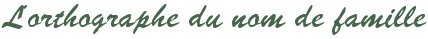

Roughly
speaking: Of course, I am speaking here of our own line, since many other lines have seen their family name evolve differently. |
|
Our family's headstone, on
the family plot in the Côte-des-Neiges cemetery in Montréal, was bought by Alphonse Charrette
(eighth generation) in the early 20th century. It shows clearly,
as do various other
documents we have, that the name was then spelled with two
"r"s.
|
|
Here is an excerpt from the introduction to the Généalogie des Charette
by Brother Jean-Benoît Charette.
"But how did Chauré become Charette by way of Choret - Chauret - Charest - Chaurette? Only the marriage record written by Father Prévost of Sainte-Marguerite parish in La Rochelle, and the marriage contract drawn up by notaire Pierre Teuleron, bear the name Chauré. The Jesuit Relations mention the name in several places. The French, those of the Charente in our case, have a natural tendency to turn the closed "e" into an open "e" by adding a stressed "t". The lip
effort needed to give a clear and understandable final sound has
never been a virtue, or even a quality, among Canadiens.
An easier way made the pronunciation of that syllable
intelligible : the final consonant is doubled and the silent
"e" is tacked on. So we have all those doublings, very
rare in "ienne" or "onne", but so frequent
in "otte", as in Massicot = Massicotte, Jeannot = Jeannotte,
Turcot = Turcotte, Picot = Picotte, and in "ette", as in Morisset = Morissette, Forget = Forgette, Choquet = Choquette, Binet =
Binette. One quite fitting explanation stems from the inability of most of our ancestors to read and write. The notaire, the priest or the official wrote names down as he heard them. Once the record had been read aloud, the contracting parties often declared that they did not know how to sign, and implicitly that they could not read. So there was no way to keep any control over the spelling of proper names or anything else. It is a truly curious phenomenon to see the most common words massacred when reading some old official documents. Linguistic scruples did not dwell under the roof of every presbytery, nor in every public office. Spelling was very unsettled, ..." (don't we level the same criticism at people who "chat" on the Internet today?) |

|
In the 17th century, France had about 636 dialects, which sometimes made communication between regions difficult. When travellers met, they spoke mostly the Paris patois, called French. But each one added a little regional touch, pronounced it in his own way and brought in words from his dialect. Sometimes these quirks became fashionable and made their way into the Paris salons, where grammarians laid down the rules and decided what could and could not be said. Most of the immigrants who landed in New France in the 17th century had their own patois, but spoke a practical French. Only a third of the population came from Paris; most of the others came from Normandy, Aunis, the Perche or Poitou. The Paris basin and the northwest strongly influenced the culture that developed in the colony and left traces that have lasted through time. Around 1650, for
example, immigrants from the Perche settled in New France; they
came, of course, with their accent and leaned hard on the T.
They said deboute, lite or nuite. With them, the Paquet family became
Paquette, Rinfret Rinfrette, the Huots were called Huotte, the Chabots
Chabotte, and so on. This pronunciation spread, and we
still hear it today. Little by little, a gap opened between the French spoken on the two sides of the ocean. North American French was more supple; accents, words and expressions from everywhere mixed together, giving it a particular colour. People allowed themselves to say "i" and "a" instead of "il" and "elle", "s'assir" instead of "s'asseoir". Nor did they hesitate to bring in regional words like "maganer", "placoter", "achaler" or "garocher". Little by little the clash of patois smoothed out, and French truly took root in the New World around 1680-1685. Perhaps this spread was sped up by the arrival of the Carignan-Salières Regiment or of the filles du Roi (King's Daughters)? Opinions on the question are divided. In any case, standardization came much later in France: the regional dialects disappeared only around 1914-1918. As long as the elite was present, North American French stayed much the same as that of Paris. The Conquest of 1760, however, reshuffled the cards, because it led many members of the elite to leave. Under the English Regime, the differences grew. The language became less stiff and people felt freer to create new words. That is when the expression "à carreaux" (checked) was replaced by "carotté", and "coquemar" by "bombe" or "bouilloire" (kettle). Many anglicisms also appeared. They shaped the language and made it evolve in its own way. Around 1840, people
realized that Canadian French was no longer at all the French
spoken in Paris. Attempts were then made to set certain standards, but it was
too late. North American French already had its own
vocabulary and its own sound, which make it a unique and
colourful language. Bibliography:
|
 For the fourth generation, we should probably write
Pierre and Joseph Chauret, and
no longer Choret. When we consult the original
documents, baptism, marriage and burial records and notarial
deeds, we find many ways of spelling our family name.
It varies with the priest or notaire (notary) who drew up the record.
For the fourth generation, we should probably write
Pierre and Joseph Chauret, and
no longer Choret. When we consult the original
documents, baptism, marriage and burial records and notarial
deeds, we find many ways of spelling our family name.
It varies with the priest or notaire (notary) who drew up the record.  marriage
record of his brother-in-law Louis Turcot on June 13, 1726, in St-Laurent,
Montréal. It is the only time Pierre signed; in all the other
records he "declared he did not know how to sign".
marriage
record of his brother-in-law Louis Turcot on June 13, 1726, in St-Laurent,
Montréal. It is the only time Pierre signed; in all the other
records he "declared he did not know how to sign".